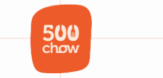
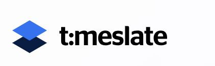

Faster processing after migrating a critical banking worker service from .NET Framework 4 to .NET 8.
Lagos, Nigeria - Open to remote and relocation
I build resilient software for products where reliability matters.
I am Faruq Aremu, a software engineer and full-stack developer with 5+ years of experience across fintech, enterprise systems, cloud deployments, and polished user-facing applications.
C# / .NET 8
Node.js
NestJS
CI/CD
DevOps
Docker
Kubernetes
React + TypeScript
Azure DevOps
OpenShift
SQL Server
MongoDB
Available
Selected impact
Engineering outcomes with measurable business value.
Customer data synchronization accuracy across NIBSS and Finacle integrations.
Reduction in manual processing through virtual account management and workflow automation.
Uptime maintained for IIS-hosted internal and customer-facing banking applications.
Toolkit
A full-stack toolkit with a backend and delivery backbone.
Backend and architecture
C#, .NET 6-8, ASP.NET Core, REST API design, microservices, EF Core, worker services, SOLID principles, clean architecture.
Frontend and product UI
React, TypeScript, Vue, Tailwind CSS, Vite, Redux, Zustand, Vuex, responsive interfaces, performance-minded UX.
Data systems
SQL Server optimization, indexing, MySQL, MongoDB, Firebase, reconciliation logic, reporting workflows, secure data integration.
Cloud and DevOps
Azure DevOps pipelines, Docker, Kubernetes, OpenShift, IIS, Linux deployments, AWS, DigitalOcean, automated testing.
Experience
A timeline of systems shipped, improved, and kept running.
Oct 2024 - Present
Software Engineer - Stanbic IBTC Bank
Modernizing and extending banking systems for Standard Bank Group in Lagos.
- Migrated critical worker services to .NET 8 and improved processing speed by 40%.
- Built customer validation integrations with NIBSS and Finacle, reducing manual verification by 60%.
- Improved wallet reconciliation, RTGS/IFT receipt generation, IIS deployments, and Azure-to-OpenShift release pipelines.
Feb 2024 - Jun 2024
Fullstack Engineer - 500chow Technologies
Built product interfaces, APIs, and deployment workflows for food-tech operations.
- Shipped responsive React, TypeScript, Tailwind, and Vite applications.
- Built Node.js, Express.js, and NestJS APIs that reduced backend processing time by 50%.
- Improved data retrieval by 60% and deployment time by 70% through database and CI/CD work.
Feb 2024
DevOps Engineer Intern - HNG Tech Limited
Containerized applications and improved delivery consistency.
- Used Docker and Kubernetes to create repeatable deployment environments.
- Automated build, test, and deployment pipelines to improve release reliability.
Oct 2020 - Jan 2024
Fullstack Engineer - Qucoon Limited
Designed scalable application services, databases, and cloud infrastructure.
- Led web and database infrastructure migration to AWS for better scale and reliability.
- Automated .NET deployments through Azure DevOps, reducing release time by 65%.
- Reduced page load time by 50% and testing overhead by 85% through optimization and automated quality checks.
Project highlights
Products and platforms I have helped bring to life.
FBN
Banking Platform
FBN Direct
Financial product experience focused on secure access, reliability, and user confidence.
Marketing TechnologyApvertise
Web platform experience shaped for campaign visibility and responsive interaction.

Chowcentral 3PL
Operational tooling for fulfillment workflows, vendor coordination, and delivery visibility.

Timeslate
Scheduling and time-management experience designed for clarity and quick decisions.
References
People who have seen the work up close.
Faruq implemented the product designs with strong attention to detail and a real commitment to quality.
Sinclair AjukuProduct Designer and UI/UX Designer
His backend work gave our mobile application reliable APIs that were easy to integrate and maintain.
Pascal ChidiCEO and Senior Mobile Developer
Faruq brings sharp technical thinking and a thoughtful approach to complex engineering problems.
Abdul-Qayyum OlatunjiFreelancer
Let us build
Need a software engineer who can move between product, backend, and deployment?
I am available for senior software engineering, full-stack, backend, fintech, and cloud delivery roles.